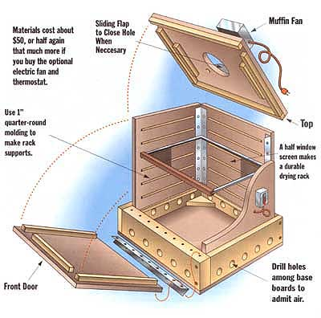
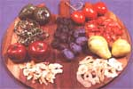
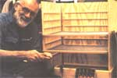

When I first took up self-reliant country living in the 1960s, I tried drying foods in a sandwich of old window screens laid at a sun-facing angle across a pair of sawhorses, but found that Mother Nature dries slowly in our changeable New England weather. I also tried an antique sheet-metal wet-heat corn dryer designed for wood-stove-top use, but its single, rusty-hardware cloth tray left barbecue-marks on the apple slices. Plus, it was too small to keep up with our kids' hearty appetite for dried delicacies.
In the 1970s I gave in to progress and got one of the MacManniman's big yardsquare electric food dryers. For two decades, its gentle electric heat preserved apricot halves and apple sections for babies to teethe on, along with other fruits, fishes and meats.
But in time the plastic screen on the racks snagged and frayed, and the oversize box got creaky from being hauled from cellar to kitchen and back. When it came time for a new dryer, all I could find for sale were little round, plastic kitchen gadgets and a couple of large and expensive wood-box units from makers I'd never heard of. So I designed and built my own.
Being of dark-stained plywood, it absorbs solar energy for sun-drying and works with stoveheat and electricity as well. Just one of its trays holds as much as one of the plastic dryers, fully-loaded, but the box is hinged to fold flat for easy carrying and storage. Here's how to make one for yourself! It's a great late-winter project offering a promise of the gardening season and harvest to come. Materials cost about $50, or half again that much more if you buy the optional electric fan and thermostat.
The hardest parts of a food dryer for an amateur wood butcher to fabricate are framed screen drying-racks. They are continually being pulled in and out, and for adequate stength, you'd have to mortise or dovetail the joints, then stretch and fasten window screening to the wood - a job requiring building jigs, a stretching frame, plus precision tools and set-up time not warranted by a single project. I have the tools and materials but not the time, so I improvised pre-assembled racks.
Know those telescoping half-window screens? I bought three of the largest I could find (the store carried 12"-, 15"- and 24"- high screens), pried them apart and trimmed them for six ready-made screen-racks, measuring 23 5/8 wide x 18 3/4 deep to give 18 square feet of drying area - the perfect size for a home-size dryer. Made of strong-enough galvanized steel rail and screen with wood endpieces, they are rust-resistant, easily replaced if need be, and fit neatly into channels made by screwing and gluing wood molding to the sides of a sturdy plywood box that is hinged for easy breakdown, transport and storage.
At a hardware store, building supply outlet, or lumberyard, buy three 24"-high telescoping window screens for about $8 apiece. You'll also need the better part of a 4' x 8' sheet of finished-both-sides, 3/8"-thick, exterior-grade plywood, a small can of moisture-proof glue (the best is ugly red Resorcinol), a box of #6 3/4" zincor brass-plated, flat-head wood screws, and a handful of #6 1 1/2" flathead wood screws. If using a power driver, be sure to get Phillips-head screws. Have on hand a dozen 1 1/2" finishing nails. To hinge the box, buy three 24" lengths of brass piano hinge for some $6 apiece. For framing, buy or cut 30' of inchsquare wood (square pine molding costs a half a dollar a foot; cheaper is to rip your own from any nominal 1"-thick board.) To make the rack supports, you'll need 30 feet of 1/2" quarter-round molding, or more home-cut square strips. For the base, get 6' of 1" x 6" pine shelving and about 3' of 2" x 6" lumber.
If you are handy with electrical appliances you can disassemble a toaster oven and hook its heating element to the house wiring, or shop around for a rheostat-controlled, low-power, resistance-wire heating element used in commercially made dryers. But, as a cheap and easy heat source, I use a a 25' string of Christmas tree lights (and unscrew lights to moderate heat output). Lights are strung between screw hooks under the drying racks. Optional to speed airflow and shorten drying time is one of those little plastic-shrouded muffin fans used in computers and copiers. You'll find them used in surplus electronic-goods catalogs for a few dollars, or at an electronics supply store for under $20. You might have one appliance do double-duty and rig an electric hair-dryer to blow heated air through a hole in the back of the dryer, but I've never tried it and doubt that a household-quality model would hold up long under continual use.
A thermometer is a very helpful option to gauge dryer temperatures. I invested $15 for an electronic inside/outside thermometer. Its "outside" probe can be inserted deep into the dryer to gauge drying temps while the "inside" reading warns if the unit is getting too warm when used over a stove.
Metal-working tools you'll need include needle-nose and side-cutting pliers and a hacksaw with the finest-toothed blade you can get. A flat metal file will smooth any exposed metal snags. A hot glue gun is an almost indespensible aid in tacking on small frame boards that are best fitted on the work. Buy a small one at any hardware store for under $15 if you aren't already so equipped.
First, disassemble and trim the screen frames. With a little wiggling, and screwdriver and pliers use, the screens will pry apart. Trim off all but 1/4" of the ends extending beyond the crossbar. Next, saw notches in the angles of the trimmed ends up to the crossbar. With the pliers, bend the 1/4" flap of rail sides, tops, and bottoms to form a boxed end. File any snags or sharp edges.
The finished size of your screens defines the interior horizontal dimensions of the box. If yours differ from my 24" x 19" screens, add or subtract as needed from the following measurements.
Using the fine-toothed plywood blade on your circular saw, cut from the plywood:
With the planer blade on the powersaw, from the 1" x 6" stock cut for the base:
From the 2" x 6" stock, cut:
For the top and base frame boards, from the square stock, cut:
For the screen-supports, from the quarter-round molding or more square stock, cut:
First, connect the side panels to the back panel with piano hinges. Placing the best side of the plywood down, lay a side panel on each side of the back panel - long dimensions running up and down. Nudge long sides of the two side panels an even 1/8" away from the long sides of the back panel. Place hinges between back and side panels with the flat side of the hinges facing up, the mid-hinge bumps nestling into the space between panels. Use your steel rule to assure that top and bottom edges of the panels are even, so the box will set square. Tap panels as snugly together as you can without pushing the hinges up. Then insert the little wood screws that come with the hinges into 1/16"-wide, 1/4" deep pilot holes, drilled through the precise center of the holes in the hinge and into the plywood (use a centerpunch of sharp nail to center the drill bit). Tighten brass screws by hand, not with the power driver - too much torque can bruise the soft-grooved heads.
To locate the rack rests, scribe eight lines from side to side, across all three panels every 3" from and parallel to the bottom edge. Do not fix rails to the top or the bottom lines. Apply waterproof glue to one flat side of the six 22" lengths of quarter-round molding and center them with their top edges just below the lines on the back panel. Locate the 18" quarter-rounds with one end 1 1/2 " in from the outer edges of each side panel and glue in place even with the rails on the back. As you go, pilot-drill and set 3/4" brass screws through the belly of the quarter-round rails and into the plywood - one screw an inch from each end and one in the middle.
Try folding the three hinged panels into a three-sided box. Folded flat-side-in, the hinges will stop, making each corner a tight 45 degrees. If inner ends of rails meet and prevent full closure, file or saw their inside corners off.
The box rests on square-stock rails attached to the inside of a base of 6"-wide lumber. As your final box size may vary depending on hinge design and placement, build the base (as well as the top and door) around the three-sided box. Set the box square and perfectly centered in the 25" x 27" plywood bottom panel. Trim the two 27" x 6" boards (one of 1"-thick lumber, the other of 2") the width of the back plus 1/8" inch. Center the 1" x 6" on edge 1/16" from the back. Center the 2" x 6" flush against the front edges of the side panels. Trim the 23" 1" x 6"s to box the front and back boards. (For a sturdier fit, cut a 3/4"-wide, 3/8"-deep notch at the inside ends of the 2' x 6' front board so the nominal 1" side boards will snug into it. It also looks best to trim the back and side boards at 45 degrees to make a mitred joint. Just be sure the box has about 1/16" of clearance from back and sides of the base.) If the plywood base panel extends beyond the baseboards, draw around outsides of the latter and trim the plywood to size.
The box rests on four rails of square stock fastened to the inside of the base boards. On each base board, draw a line three inches down from and parallel to the top edge. Center two 22" lengths of square stock on the side boards and the two 19" lengths on the front and back boards with their top edges along the bottom of the drawn lines. Fasten the boards with glue and screws.
Replace base boards carefully around the box, maintaining the 1/16" clearance at back and sides. Remove the box and, on the plywood base, draw around insides of baseboards. Removing and replacing one board at a time, apply glue to the bottoms and to the edges of joints and set into place inside the drawn lines. Weight corners with bricks. Then pilot drill and fasten ends of side boards to front and back boards with two 1 1/2" screws or three 1 1/2" finish nails per joint.
When glue is tacky enough to hold, flip base over and put 3/4" screws every four inches through pilot holes in the plywood and into the base boards. Flip again and, for added strength, cut four 3"-to-a-side triangular gussets from scrap 1" x 6" lumber and drill a 1/16" pilot hole in the center of each. Coat one flat side and the two 45 degree edges with glue, press one gusset hard into each corner, and screw to plywood with a 3/4" screw.
Now frame the top with a dual row of square-stock rails arranged around the edges so the box will nest into it. Place the three-sided box on the base and put the 22" x 26" plywood top panel on top so that it extends 1/16" more than the actual width of your square stock beyond the back and equal distance out from each side panel (you want the front to extend out a bit). On the underside of the top panel, draw carefully around the outside of the three box panels. Remove top, measure, and trim one 21" and the two 26" lengths of square stock to fit in a box-top-opening size "U" shape with their inner edges just outside of the lines just drawn. Draw around the outsides of rails, and trim outer edges of the back and sides of the plywood even with the outer edges of the rail "U." Tack-glue the three frame boards onto the top panel and screw-fasten.
Cut three 8" lengths of scrap square-stock and tack-glue them to the underside of the top, parallel to and a 1/2" inside the outer frame members (so they will hold the panels loosely against the outer frame members). One board should be centered along the back, and the front ends of the other two even with the front ends of the outer-side boards already in place. Cut two 4" pieces of square scrap and tack them 1/2" inside the outer side frames toward the back. Check how well it fits by putting the top on the box; then pilot-drill and fasten the frame boards to the panel with two 1" screws every three inches. Now, the top will fit down over the three-sided box and hold it square.
Next make the door, which hinges to the nominal 2"-wide front baseboard and is held at top by a strip of square stock you will measure and attach to the front of the top panel. Place box into base, put on the top, and slide in the drying racks. If need be, trim the upper edge of the door panel so its width is the same as the base frame is wide, and its height 3/16" less than the front opening with top on. Trim the two 28" lengths of square stock the height of the door and screw and glue them to the inside of the door so they make a flange at each side of the box. Trim the 24" of square stock so it fits loosely into the top of the box-front opening, just under the top. Center it along the inside upper edge of the door; glue and screw it on.
Then attach the door to the base with the remaining length of piano hinge. Fit the door snug against the box, so it closes the opening. Orient the hinge bumped-side up and bend up at a 45 degree angle. Press angled hinge into intersection of door bottom and top edge of the front baseboard. Tack glue, then fasten upper flange of hinge to door with screws provided, pilot-drilling the holes. Press door tight against the front of the box, then tack-glue and fasten the lower hinge flange to the top of the front frame board with pilot-drilled 1 1/4" #6 screws (the small screws provided with the hinge are too small to hold in softwood lumber). The door will now open out flat and swing up to close the dryer reasonably airtight.
Finally, trim the last 26" of square stock the full width of the door, close the door, and fasten the square strip to the underside of the top panel in a lip snug enough against the front of the door that the top will keep the door closed. Trim front of top even with the front edge of the lip.
To provide bottom vents to admit drying air, use a large-diameter (1/2" is best) twist or spade bit to drill slightly up-trending holes from outside to inside, every 3" or so through all the base boards. (Don't try to drill through screws fastening boards to the plywood baseboard.) Set the base on scrap wood you don't mind drilling through and make a grid of holes spaced about 4" apart each way through the plywood. (For the cleanest cut through plywood, drill slowly and straight down through and into the scrap beneath it.
For a top vent, use your jigsaw to cut a hole in the center of the top (drill a blade-size hole on the inside of the scribed circle, insert blade, and go around). Make it the same diameter as the circle described by the moving blades of the muffin fan if you are using one. For unpowered, gravity-drying, cut out an 8"-diameter circle. From scrap plywood, cut out a circle an inch larger than the hole with a nickel-size bump on the rim. Center lid over hole, drill through the center of the bump and the underlying top panel; then fix lid to top with a small bolt so you can adjust size of the opening to control airflow and drying temperature.
If you plan to dry fish or use hot spices on meat or in leathers, finish the inside of the box and the wood of the screens. Apply two or three coats of sanding-sealer, sanding each coat smooth. Then paint with several coats of white enamel or clear varnish so that the wood is shiny and impermeable as the inside of a refrigerator. For a kitchen furniture-like outside finish, sand, seal, and paint white. For a living-room finish, seal, stain (with a dark furniture stain if you plan to use sun power), and varnish.
To power the dryer electrically, insert six small screw hooks, three inches apart into each side rail inside the base. Suspend a 25' string of Christmas tree lights tight between the hooks. Be sure that no bulb touches wood or a wire. Cut an inch-long notch into the bottom of the rear base board wide enough to run the cord through. At the middle of one side, drill a hole under the third-from-the-bottom drying rack rail to admit the probe. Mount the thermostat above it with screws provided. Lead the semi-flexible tubing into dryer through the hole, stapling loosely along the underside of the rail, and staple the end of the probe to the middle of the back panel - the element of the probe extending out into the dryer.
To assemble, set the base on a sturdy, flat surface, fold the hinged sides into a 3-sided box, and set into the base. Put on the top, insert racks, close door, and plug in the fan and lights.
As noted above, food will dry (slowly) in sub-freezing weather and - if given a high air flow - will dry at any warm temperature. However, the most effective drying-temperature range is 110 to 150 degrees Fahrenheit. Old-timers dried foods at high temperatures; however a temperature above 150 degrees will destroy nutrients. Indeed, recent research suggests that the lower the drying temperature, the more nutrients are retained. If you use a thermometer, juggle vent opening and fan speed to regulate air flow, so as to keep the temperature around 110 degrees Fahrenheit. When sun-drying in mid-summer, you may find that a high air volume is needed to keep temperatures from skyrocketing and cooking the food.
Drying times depend on the nature and thickness of the food, as well as warmth, humidity, and air-flow. In dry winter air, you may find that the fan alone - running at top speed with vent open wide - will dry thin apple slices in 24 hours. In humid weather, you may need the heat lights, with the fan moving a small but constant volume of air, to dry a batch in two days or more. Experiment - remembering that the dryer the food, the better it will keep.
To keep wet food from sticking to the drying racks, either let it air-dry awhile, lay a donut of wax paper or square of cheesecloth over the wire screens for the first phase of drying, or (with fish, meat, or cooking vegetables, but not fruit products) spray Pam or another non-stick cooking aid on screens.
Lay pieces close together but with space for air to circulate between. Shake the trays or hand-turn larger pieces two or three times a day. To maintain continuous production, compact pieces on fewer screens as they shrink and move screens from top to bottom as food dries. Unload the lowest rack when its load is dry and introduce new foods to the upper level.
To use a dark-stained dryer with free and natural energy, take the box off the base, and set it on bricks or 2"-high wood blocks over a dark, heat-absorbing platform in the sun. Turn the box from time to time to keep the internal temperature even, and crack the top or regulate the top vent to maintain internal temperature.
If the woodstove is really pumping out the heat, place the dryer-box on blocks on a table that's a safe distance from the stove's radiant-heat-projecting surfaces (typically, any combustible must be kept 18" from the back or sides and 36" from the front, but check your stove's installation instructions). Open the top vent for gravity-drying or place the fan on top so it pulls air up. Adjust blade speed with a rheostat or regulate the vent cover to maintain a gentle air flow (fan-forced air will dry effectively even if cooler than 110 degrees Fahrenheit).
If the wood stove is warm but not hot, you can take the box off its base and place it on stacked bricks over the stove top. You can do the same over a gas or electric stove top if you're careful and plan to stay in the kitchen all day. But wood can ignite if overheated - even if not touching flame. The inside/outside thermometer provides a safety factor; don't let the outside temperature exceed 150 degrees Fahrenheit. And never set a wood food-dryer over a potential fire-maker if there is a remote possibility that you might be called out of the house.
In winter, if you have forced hot-air central heating, place the dryer over a register. In subfreezing weather, put the dryer on the porch and turn on the fan; dry-cold air will "freeze-dry" foods slowly but effectively as frozen water "sublimates;' turning directly from a solid to a vapor state without going through a liquid state in between. But easiest, fastest, and most worry free - even if your electrical bill will be a tad higher - is to use the Christmas-light heater with the fan. Place the box on the heater base, open the top vent, and maintain a gentle warmth and constant air flow by adjusting size of the the top vent under the fan and by screwing-in and unscrewing bulbs. If a single strand of lights doesn't provide enough heat, string on another. Wrap wires with flexible black electrician's tape on both sides of light sockets if lamps threaten to touch the insulation.
For storage, unfold the box and lay flat or support firmly against a wall to prevent plywood from warping. Fold door down against the base base and pile together with the top and stacked drying racks on top of the box panels.
In some of my recent woodworking articles, I have mentioned the pleasure I experience when using the silky, rosewood-handled try square that I inherited from my grandfather. I suggested that readers buy a similar tool, new or used, at an auction or yard sale. Well, I've just learned that rosewood is one of several tropical rain forest trees being over-harvested in the wild, to the point that they have become seriously endangered. Others over-harvested woods include: ebony, roko, padauk, and true mahogany. Coincidentally, all these woods - used for ornamental inlay work and musical-instrument finger boards, as well as fine tool handles - contain toxic phenols and are best not worked by amateurs.
Teak, a tropical (though not strictly a rain forest) species widely used for outdoor furniture, is also endangered in the wild. However, most raw boards and teak products on the U.S. market are from plantations (and have been in existence since the days when teak was used to deck sailing ships) and are now being certified by several international conservation organizations. Hopefully, rosewood and other endangered trees will also come under cultivation or controlled harvest - providing cash incomes to people who are now burning the rain forests for subsistence agriculture. Till then, to do my small bit in reducing the total demand for these endangered woods, I will not buy rosewood, ebony, etc., as raw stock or in a finished product, new or used; I both regret and retract my earlier recommendation. Try squares come with American walnut and other type handles, and readers wanting to work with dense, easy-working but common domestic woods having all the character of an exotic, might look into the Texas Mesquite.
The Solar Food Dryer book, by Eben Fodor. If you are thinking of building a solar food dryer, or you just want to learn the basics of how to preserve food by dehydrating, this is the best book available. Includes full details on how to build a very effective solar-powered dehydrator. Order now.
|
 SCOTT MACNEILL Don't miss out on this guide that shows how to build a dryer that is powered by sun, stove, or electric energy. |
 DENNIS BARNES Dried foods, before and after. |
 DEBRA TETREAULT The dryer is almost complete! |